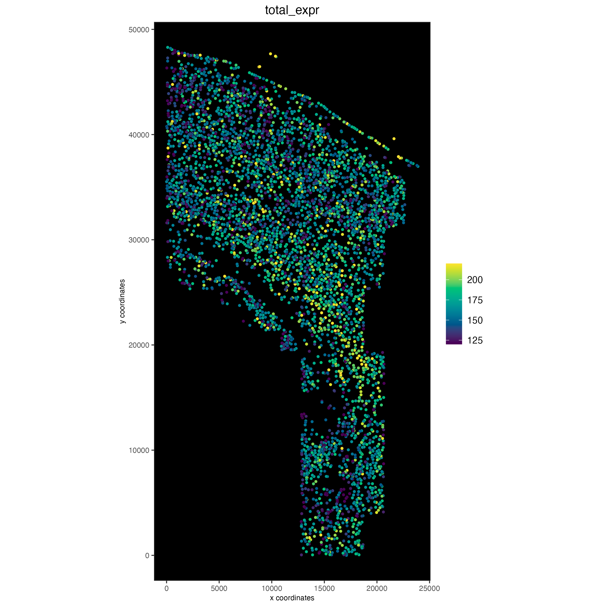
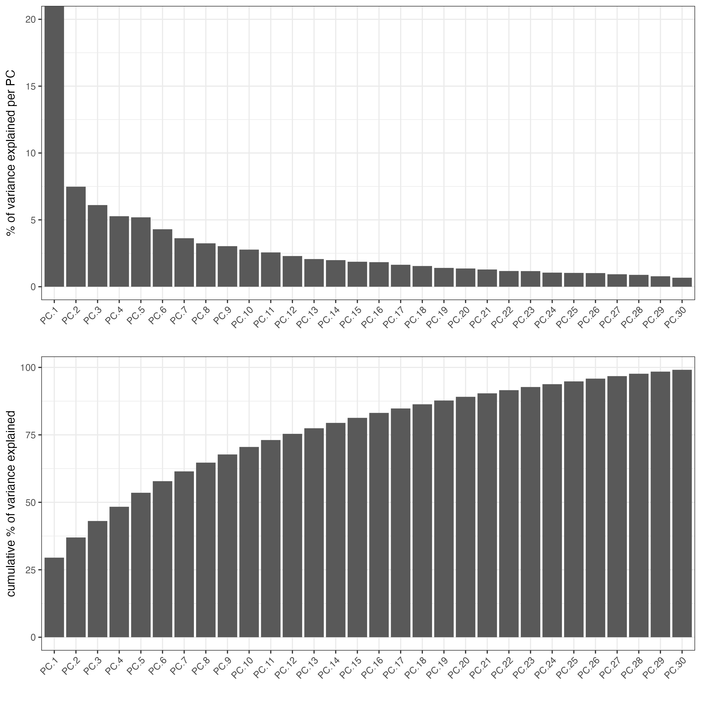
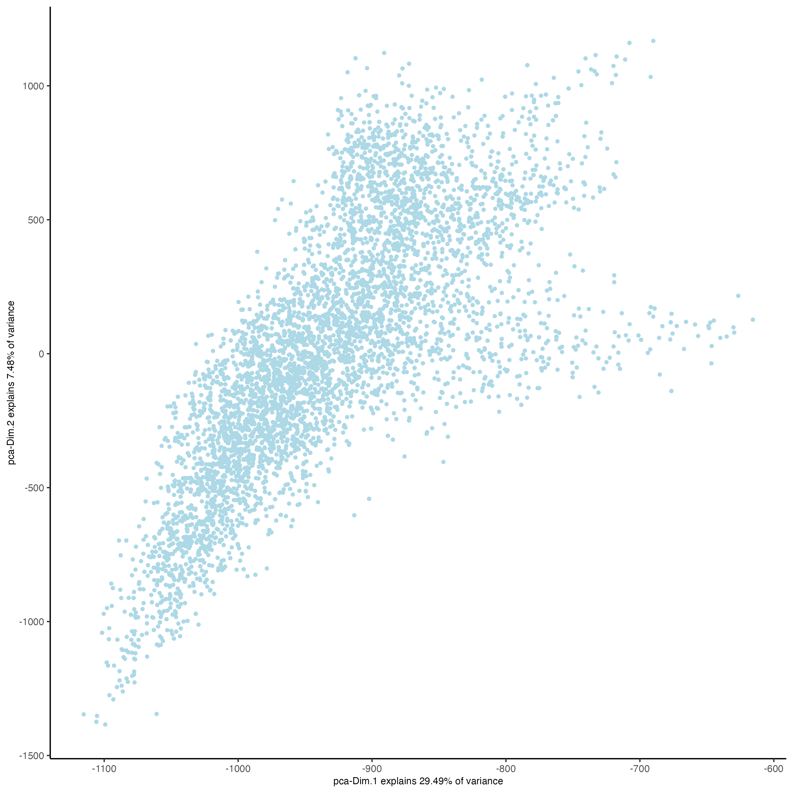
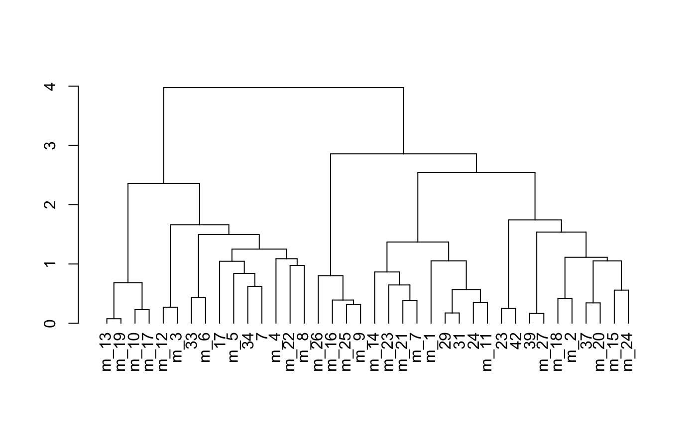
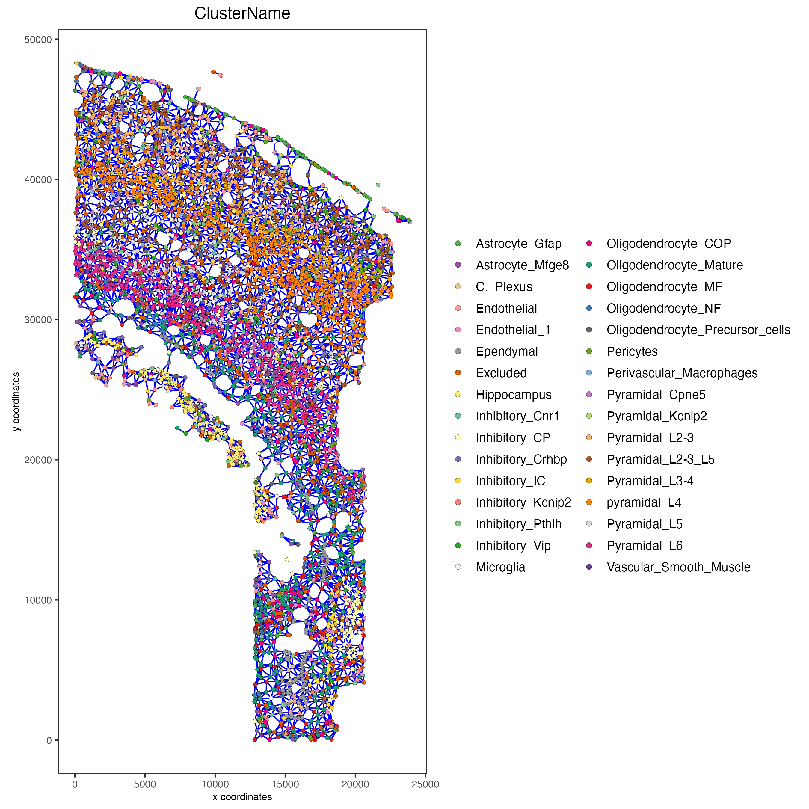

Dataset explanation
Codeluppi et al. created a cyclic single-molecule fluorescence in situ hybridization (osmFISH) technology and define the cellular organization of the somatosensory cortex with the expression of 33 genes in 5,328 cells.
Set up Giotto environment
# Ensure Giotto Suite and GiottoData, a small, helper module for tutorials, are installed.
pkgs <- c("Giotto", "GiottoData")
need_install <- pkgs[sapply(pkgs, function(pkg) !requireNamespace(pkg, quietly = TRUE))]
if (length(need_install) > 0L) {
if (!requireNamespace("pak", quietly = TRUE)) install.packages("pak")
pak::pak(sprintf("drieslab/%s", need_install))
}
# Ensure the Python environment for Giotto has been installed.
genv_exists = Giotto::checkGiottoEnvironment()
if(!genv_exists){
# The following command need only be run once to install the Giotto environment.
Giotto::installGiottoEnvironment()
}
library(Giotto)
library(GiottoData)
# 1. set working directory
results_folder = 'path/to/result'
# Optional: Specify a path to a Python executable within a conda or miniconda
# environment. If set to NULL (default), the Python executable within the previously
# installed Giotto environment will be used.
my_python_path = NULL # alternatively, "/local/python/path/python" if desired.Dataset download
The osmFISH data to run this tutorial can be found here. Alternatively you can use the getSpatialDataset to automatically download this dataset like we do in this example; to download the data used to create the Giotto Object below, please ensure that wget is installed locally.
# download data to working directory ####
# if wget is installed, set method = 'wget'
# if you run into authentication issues with wget, then add " extra = '--no-check-certificate' "
getSpatialDataset(dataset = 'osmfish_SS_cortex',
directory = results_folder,
method = 'wget')1. Giotto global instructions and preparations
## instructions allow us to automatically save all plots into a chosen results folder
instrs = createGiottoInstructions(save_plot = TRUE,
show_plot = FALSE,
save_dir = results_folder,
python_path = python_path)
expr_path = file.path(results_folder, "osmFISH_prep_expression.txt")
loc_path = file.path(results_folder, "osmFISH_prep_cell_coordinates.txt")
meta_path = file.path(results_folder, "osmFISH_prep_cell_metadata.txt")2. Create Giotto object & process data
## create
osm_test <- createGiottoObject(expression = expr_path,
spatial_locs = loc_path,
instructions = instrs)
## add field annotation
metadata = data.table::fread(file = meta_path)
osm_test <- addCellMetadata(osm_test, new_metadata = metadata,
by_column = T, column_cell_ID = 'CellID')
## filter
osm_test <- filterGiotto(gobject = osm_test,
expression_threshold = 1,
feat_det_in_min_cells = 10,
min_det_feats_per_cell = 10,
expression_values = c('raw'),
verbose = TRUE)
## normalize Giotto
## there are two ways for osmFISH object
# 1. standard z-score way
osm_test <- normalizeGiotto(gobject = osm_test)
# 2. osmFISH way
raw_expr_matrix <- getExpression(osm_test,
values = "raw",
output = "matrix")
norm_genes <- (raw_expr_matrix/Matrix::rowSums(raw_expr_matrix)) * nrow(raw_expr_matrix)
norm_genes_cells <- Matrix::t((Matrix::t(norm_genes)/Matrix::colSums(norm_genes)) * ncol(raw_expr_matrix))
norm_genes_cells <- Giotto::createExprObj(norm_genes_cells,
name = "custom")
osm_test <- setGiotto(osm_test,
x = norm_genes_cells)
## add a python path
x = createGiottoInstructions()
osm_test <- changeGiottoInstructions(osm_test,
params = "python_path",
new_values = x$python_path)
## add gene & cell statistics
osm_test <- addStatistics(gobject = osm_test)
# save according to giotto instructions
spatPlot2D(gobject = osm_test,
cell_color = 'ClusterName',
point_size = 1.3,
save_param = list(save_name = '2_a_original_clusters'))
spatPlot2D(gobject = osm_test,
cell_color = 'Region',
cell_color_code = c(
"Excluded" = "lightsteelblue4",
"Hippocampus" = "gold",
"White matter" = "cyan",
"Internal Capsule Caudoputamen" = "#9730F2",
"Ventricle" = "green",
"Layer 2-3 lateral" = "blue",
"Layer 2-3 medial" = "yellowgreen",
"Layer 3-4" = "brown",
"Layer 4" = "orange",
"Layer 5" = "red",
"Layer 6" = "magenta",
"Pia Layer 1" = "mediumturquoise"
),
point_size = 1.5,
save_param = list(save_name = '2_b_original_regions'))
spatPlot2D(gobject = osm_test,
cell_color = 'ClusterID',
point_size = 1.5,
save_param = list(save_name = '2_c_clusterID'))
spatPlot2D(gobject = osm_test,
cell_color = 'total_expr',
color_as_factor = FALSE,
point_size = 1.5,
gradient_style = "sequential",
gradient_midpoint = 160,
gradient_limits = c(120,220),
background_color = "black",
save_param = list(save_name = '2_d_total_expr_limits'))
3. Dimension reduction
## highly variable genes (HVG)
# only 33 genes so use all genes
## run PCA on expression values (default)
osm_test <- runPCA(gobject = osm_test,
expression_values = 'custom',
scale_unit = F,
center = F)
screePlot(osm_test,
ncp = 30,
save_param = list(save_name = '3_a_screeplot'))

## run UMAP and tSNE on PCA space (default)
osm_test <- runUMAP(osm_test,
dimensions_to_use = 1:31,
n_threads = 4)
plotUMAP(gobject = osm_test,
save_param = list(save_name = '3_c_UMAP_reduction'))
plotUMAP(gobject = osm_test,
cell_color = 'total_expr',
color_as_factor = FALSE,
point_size = 2,
gradient_style = "sequential",
gradient_midpoint = 180,
gradient_limits = c(120, 220),
background_color = "black",
save_param = list(save_name = '3_d_UMAP_reduction_expression'))
osm_test <- runtSNE(osm_test,
dimensions_to_use = 1:31,
perplexity = 70,
check_duplicates = F)
plotTSNE(gobject = osm_test,
save_param = list(save_name = '3_e_tSNE_reduction'))
4. Cluster
## hierarchical clustering
osm_test <- doHclust(gobject = osm_test,
expression_values = 'custom',
k = 36)
plotUMAP(gobject = osm_test,
cell_color = 'hclust',
point_size = 2.5,
show_NN_network = F,
edge_alpha = 0.05,
save_param = list(save_name = '4_a_UMAP_hclust'))
## kmeans clustering
osm_test <- doKmeans(gobject = osm_test,
expression_values = 'normalized',
dim_reduction_to_use = 'pca',
dimensions_to_use = 1:20,
centers = 36,
nstart = 2000)
plotUMAP(gobject = osm_test,
cell_color = 'kmeans',
point_size = 2.5,
show_NN_network = F,
edge_alpha = 0.05,
save_param = list(save_name = '4_b_UMAP_kmeans'))
## Leiden clustering strategy:
# 1. overcluster
# 2. merge small clusters that are highly similar
# sNN network (default)
osm_test <- createNearestNetwork(gobject = osm_test,
dimensions_to_use = 1:31,
k = 12)
osm_test <- doLeidenCluster(gobject = osm_test,
resolution = 0.09,
n_iterations = 1000)
plotUMAP(gobject = osm_test,
cell_color = 'leiden_clus',
point_size = 2.5,
show_NN_network = F,
edge_alpha = 0.05,
save_param = list(save_name = '4_c_UMAP_leiden'))
# merge small groups based on similarity
leiden_similarities = getClusterSimilarity(osm_test,
expression_values = 'custom',
cluster_column = 'leiden_clus')
osm_test <- mergeClusters(osm_test,
expression_values = 'custom',
cluster_column = 'leiden_clus',
new_cluster_name = 'leiden_clus_m',
max_group_size = 30,
force_min_group_size = 25,
max_sim_clusters = 10,
min_cor_score = 0.7)
plotUMAP(gobject = osm_test,
cell_color = 'leiden_clus_m',
point_size = 2.5,
show_NN_network = F,
edge_alpha = 0.05,
save_param = list(save_name = '4_d_UMAP_leiden_merged'))
## show cluster relationships
showClusterHeatmap(gobject = osm_test,
expression_values = 'custom',
cluster_column = 'leiden_clus_m',
save_param = list(save_name = '4_e_heatmap', units = 'cm'),
row_names_gp = grid::gpar(fontsize = 6),
column_names_gp = grid::gpar(fontsize = 6))
showClusterDendrogram(osm_test,
cluster_column = 'leiden_clus_m',
h = 1,
rotate = T,
save_param = list(save_name = '4_f_dendro', units = 'cm'))
5. Co-visualize
# expression and spatial
spatDimPlot2D(gobject = osm_test,
cell_color = 'leiden_clus',
spat_point_size = 2,
plot_alignment = 'horizontal',
save_param = list(save_name = '5_a_covis_leiden'))
spatDimPlot2D(gobject = osm_test,
cell_color = 'leiden_clus_m',
spat_point_size = 2,
plot_alignment = 'horizontal',
save_param = list(save_name = '5_b_covis_leiden_m'))
spatDimPlot2D(gobject = osm_test,
cell_color = 'leiden_clus_m',
dim_point_size = 2,
spat_point_size = 2,
select_cell_groups = '29',
plot_alignment = 'horizontal',
save_param = list(save_name = '5_c_covis_leiden_merged_selected'))
spatDimPlot2D(gobject = osm_test,
cell_color = 'total_expr',
color_as_factor = FALSE,
dim_point_shape = "no_border",
spat_point_shape = "no_border",
dim_point_size = 0.4,
spat_point_size = 0.4,
dim_background_color = "black",
spat_background_color = "black",
gradient_style = "sequential",
gradient_midpoint = 160,
gradient_limits = c(120,220),
plot_alignment = 'horizontal',
save_param = list(save_name = '5_d_total_expr'))
6. Differential expression
## split dendrogram nodes ##
dendsplits = getDendrogramSplits(gobject = osm_test,
expression_values = 'custom',
cluster_column = 'leiden_clus_m')
split_3_markers = findMarkers(gobject = osm_test,
method = 'gini',
expression_values = 'custom',
cluster_column = 'leiden_clus_m',
group_1 = unlist(dendsplits[3]$tree_1),
group_2 = unlist(dendsplits[3]$tree_2))
## Individual populations ##
markers = findMarkers_one_vs_all(gobject = osm_test,
method = 'scran',
expression_values = 'custom',
cluster_column = 'leiden_clus_m',
min_feats = 2, rank_score = 2)
## violinplot
topgenes = markers[, head(.SD, 1), by = 'cluster']$feats
violinPlot(osm_test,
feats = unique(topgenes),
cluster_column = 'leiden_clus_m',
expression_values = 'custom',
strip_text = 5,
strip_position = 'right',
save_param = list(save_name = '6_a_violinplot'))
plotMetaDataHeatmap(osm_test,
expression_values = 'custom',
metadata_cols = c('leiden_clus_m'),
save_param = list(save_name = '6_b_metaheatmap'))
plotMetaDataHeatmap(osm_test,
expression_values = 'custom',
metadata_cols = c('leiden_clus_m'),
save_param = list(save_name = '6_e_metaheatmap_all_genes'))
plotMetaDataHeatmap(osm_test,
expression_values = 'custom',
metadata_cols = c('ClusterName'),
save_param = list(save_name = '6_f_metaheatmap_all_genes_names'))
7. Cell type annotation
Use annotateGiotto() to annotate the clusters. For this dataset, we have ClusterName in the metadata.
8. Spatial grid
osm_test <- createSpatialGrid(gobject = osm_test,
sdimx_stepsize = 2000,
sdimy_stepsize = 2000,
minimum_padding = 0)
spatPlot2D(osm_test,
cell_color = 'ClusterName',
show_grid = TRUE,
grid_color = 'lightblue',
spatial_grid_name = 'spatial_grid',
point_size = 1.5,
save_param = list(save_name = "8_grid_det_cell_types"))9. Spatial network
osm_test <- createSpatialNetwork(gobject = osm_test)
spatPlot2D(gobject = osm_test,
show_network = T,
network_color = 'blue',
point_size = 1.5,
cell_color = 'ClusterName',
legend_symbol_size = 2,
save_param = list(save_name = '9_spatial_network_k10'))
10. Spatial genes
# km binarization
kmtest = binSpect(osm_test,
calc_hub = T,
hub_min_int = 5,
bin_method = 'kmeans')
spatDimFeatPlot2D(osm_test,
expression_values = 'scaled',
feats = kmtest$feats[1:3],
plot_alignment = 'horizontal',
spat_point_shape = "no_border",
dim_point_shape = "no_border",
spat_point_size = 0.1,
dim_point_size = 0.1,
cow_n_col = 1,
save_param = list(save_name = '10_a_spatial_genes_km'))12. Cell-cell preferential proximity
## calculate frequently seen proximities
cell_proximities = cellProximityEnrichment(gobject = osm_test,
cluster_column = 'ClusterName',
number_of_simulations = 1000)
## barplot
cellProximityBarplot(gobject = osm_test,
CPscore = cell_proximities,
min_orig_ints = 25,
min_sim_ints = 25,
save_param = list(save_name = '12_a_barplot_cell_cell_enrichment'))
## heatmap
cellProximityHeatmap(gobject = osm_test,
CPscore = cell_proximities,
order_cell_types = T,
scale = T,
color_breaks = c(-1.5, 0, 1.5),
color_names = c('blue', 'white', 'red'),
save_param = list(save_name = '12_b_heatmap_cell_cell_enrichment',
unit = 'in'))
## network
cellProximityNetwork(gobject = osm_test,
CPscore = cell_proximities,
remove_self_edges = F,
only_show_enrichment_edges = T,
save_param = list(save_name = '12_c_network_cell_cell_enrichment'))
## visualization
spec_interaction = "Astrocyte_Mfge8--Oligodendrocyte_Precursor_cells"
cellProximitySpatPlot(gobject = osm_test,
interaction_name = spec_interaction,
cluster_column = 'ClusterName',
cell_color = 'ClusterName',
cell_color_code = c('Astrocyte_Mfge8' = 'blue',
'Oligodendrocyte_Precursor_cells' = 'red'),
coord_fix_ratio = 0.5,
point_size_select = 3,
point_size_other = 1.5,
save_param = list(save_name = '12_d_cell_cell_enrichment_selected'))
13. Session Info
R version 4.3.2 (2023-10-31)
Platform: x86_64-apple-darwin20 (64-bit)
Running under: macOS Sonoma 14.3.1
Matrix products: default
BLAS: /System/Library/Frameworks/Accelerate.framework/Versions/A/Frameworks/vecLib.framework/Versions/A/libBLAS.dylib
LAPACK: /Library/Frameworks/R.framework/Versions/4.3-x86_64/Resources/lib/libRlapack.dylib; LAPACK version 3.11.0
locale:
[1] en_US.UTF-8/en_US.UTF-8/en_US.UTF-8/C/en_US.UTF-8/en_US.UTF-8
time zone: America/New_York
tzcode source: internal
attached base packages:
[1] stats graphics grDevices utils datasets methods base
other attached packages:
[1] GiottoData_0.2.7.0 GiottoUtils_0.1.5 Giotto_4.0.2 GiottoClass_0.1.3
loaded via a namespace (and not attached):
[1] RColorBrewer_1.1-3 ggdendro_0.1.23 rstudioapi_0.15.0
[4] jsonlite_1.8.8 shape_1.4.6 magrittr_2.0.3
[7] magick_2.8.2 farver_2.1.1 rmarkdown_2.25
[10] GlobalOptions_0.1.2 zlibbioc_1.48.0 ragg_1.2.7
[13] vctrs_0.6.5 Cairo_1.6-2 DelayedMatrixStats_1.24.0
[16] RCurl_1.98-1.14 terra_1.7-71 htmltools_0.5.7
[19] S4Arrays_1.2.0 BiocNeighbors_1.20.2 SparseArray_1.2.4
[22] plyr_1.8.9 igraph_2.0.1.1 lifecycle_1.0.4
[25] iterators_1.0.14 pkgconfig_2.0.3 rsvd_1.0.5
[28] Matrix_1.6-5 R6_2.5.1 fastmap_1.1.1
[31] GenomeInfoDbData_1.2.11 MatrixGenerics_1.14.0 clue_0.3-65
[34] digest_0.6.34 colorspace_2.1-0 S4Vectors_0.40.2
[37] dqrng_0.3.2 irlba_2.3.5.1 textshaping_0.3.7
[40] GenomicRanges_1.54.1 beachmat_2.18.0 labeling_0.4.3
[43] progressr_0.14.0 fansi_1.0.6 polyclip_1.10-6
[46] abind_1.4-5 compiler_4.3.2 withr_3.0.0
[49] doParallel_1.0.17 backports_1.4.1 BiocParallel_1.36.0
[52] viridis_0.6.5 dendextend_1.17.1 ggforce_0.4.1
[55] MASS_7.3-60.0.1 DelayedArray_0.28.0 rjson_0.2.21
[58] bluster_1.12.0 gtools_3.9.5 GiottoVisuals_0.1.4
[61] tools_4.3.2 glue_1.7.0 dbscan_1.1-12
[64] grid_4.3.2 checkmate_2.3.1 Rtsne_0.17
[67] cluster_2.1.6 reshape2_1.4.4 generics_0.1.3
[70] gtable_0.3.4 tidyr_1.3.1 data.table_1.15.0
[73] BiocSingular_1.18.0 tidygraph_1.3.1 ScaledMatrix_1.10.0
[76] metapod_1.10.1 utf8_1.2.4 XVector_0.42.0
[79] BiocGenerics_0.48.1 RcppAnnoy_0.0.22 ggrepel_0.9.5
[82] foreach_1.5.2 pillar_1.9.0 stringr_1.5.1
[85] limma_3.58.1 circlize_0.4.15 tweenr_2.0.2
[88] dplyr_1.1.4 lattice_0.22-5 deldir_2.0-2
[91] tidyselect_1.2.0 ComplexHeatmap_2.18.0 SingleCellExperiment_1.24.0
[94] locfit_1.5-9.8 scuttle_1.12.0 knitr_1.45
[97] gridExtra_2.3 IRanges_2.36.0 edgeR_4.0.15
[100] SummarizedExperiment_1.32.0 stats4_4.3.2 xfun_0.42
[103] graphlayouts_1.1.0 Biobase_2.62.0 statmod_1.5.0
[106] matrixStats_1.2.0 stringi_1.8.3 yaml_2.3.8
[109] evaluate_0.23 codetools_0.2-19 ggraph_2.1.0
[112] tibble_3.2.1 colorRamp2_0.1.0 cli_3.6.2
[115] uwot_0.1.16 reticulate_1.35.0 systemfonts_1.0.5
[118] munsell_0.5.0 Rcpp_1.0.12 GenomeInfoDb_1.38.6
[121] png_0.1-8 parallel_4.3.2 ggplot2_3.4.4
[124] scran_1.30.2 sparseMatrixStats_1.14.0 bitops_1.0-7
[127] SpatialExperiment_1.12.0 viridisLite_0.4.2 scales_1.3.0
[130] purrr_1.0.2 crayon_1.5.2 GetoptLong_1.0.5
[133] rlang_1.1.3 cowplot_1.1.3